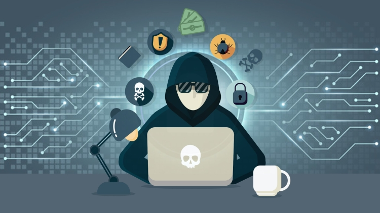

What is cybersecurity?

Cybersecurity is a crucial aspect of our increasingly digital world. It refers to
the practice of protecting computer systems, networks, and digital information
from unauthorized access, theft, or damage. With the proliferation of technology and the
interconnectedness of devices, the need for robust cybersecurity measures
has become more important than ever before.
Cybersecurity is important!
In recent years, cyber threats have evolved and become more sophisticated,
requiring constant vigilance and adaptation of security protocols. These threats can come in various
forms, including viruses, malware, ransomware, phishing attacks, and social engineering techniques.
They can target individuals, businesses, or even entire nations, with the potential to cause
significant financial and reputational damage.
To counter these threats, cybersecurity professionals employ a variety of techniques and
technologies. These may include firewalls, antivirus software, encryption algorithms, and
intrusion
detection systems. Additionally, network administrators and individuals must regularly update
software and firmware to maintain security protocols and protect against newly discovered
vulnerabilities.
The consequences of a cybersecurity breach can be devastating. Personal information can be
stolen,
leading to identity theft and financial loss. Businesses can suffer from reputational damage,
loss
of intellectual property, and disruptions to their operations. Government agencies can
experience
breaches of sensitive data, compromising national security.
To address these risks, cybersecurity has become a priority for governments, businesses, and
individuals alike. Organizations invest heavily in cybersecurity measures to safeguard their
information assets and maintain the trust of their customers. Governments enact legislation and
establish cybersecurity agencies to monitor and combat cyber threats at a national level.
Individuals are encouraged to adopt best practices such as using strong passwords, being cautious of
suspicious emails and websites, and keeping their devices updated.
As our reliance on technology continues to grow, the field of cybersecurity will remain critical. It
is a constantly evolving area, as cybercriminals develop new tactics and exploit emerging
technologies. Thus, continuous education and training are essential to stay ahead of potential
threats and ensure the security of our digital lives.
Useful links